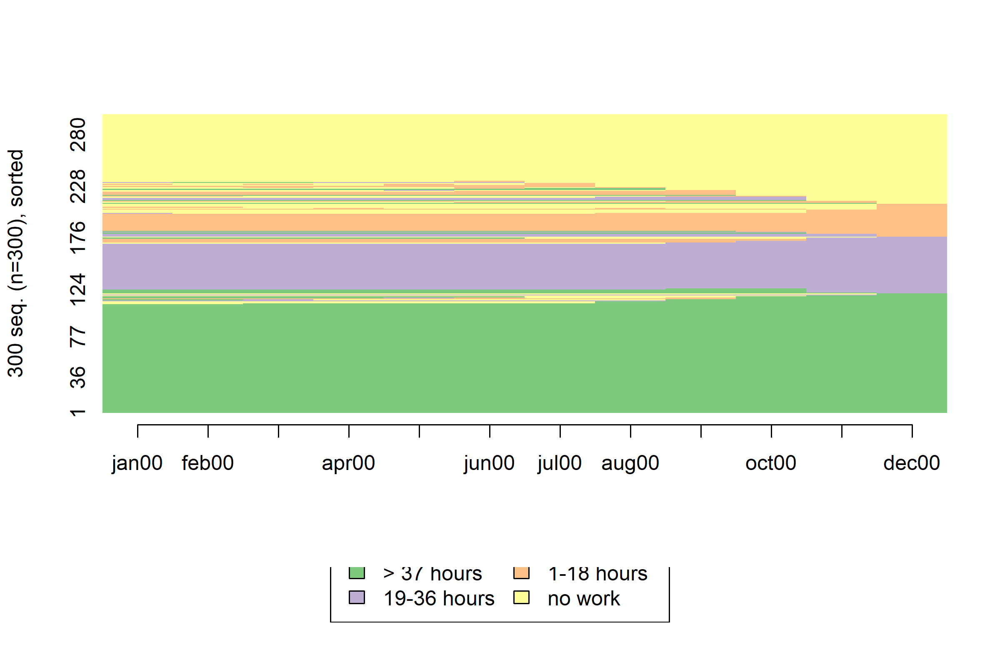
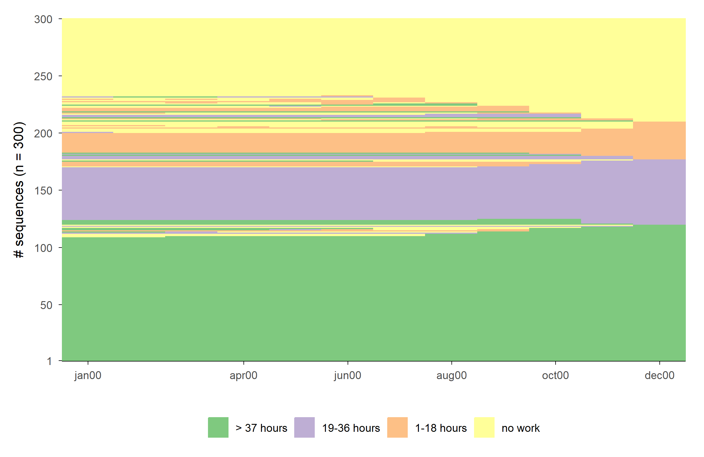
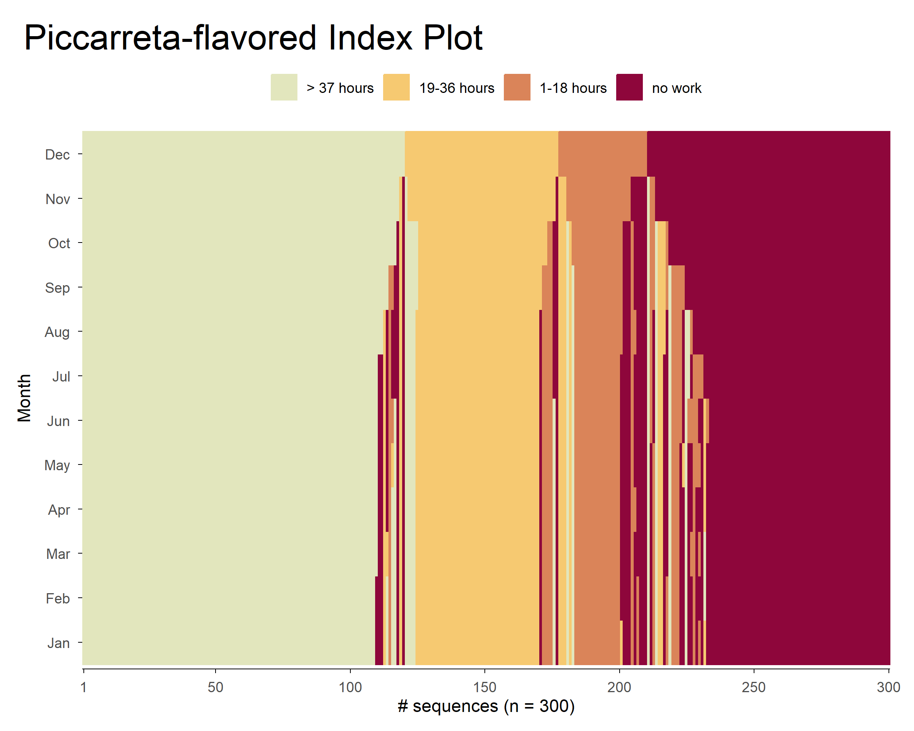
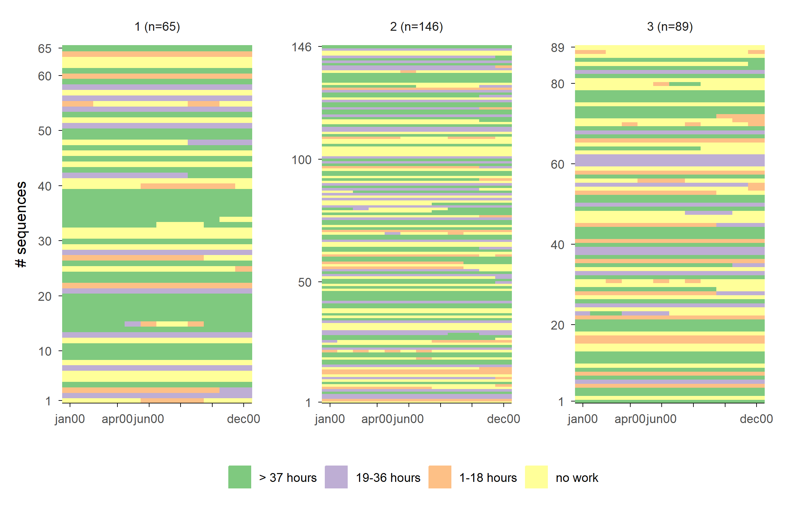
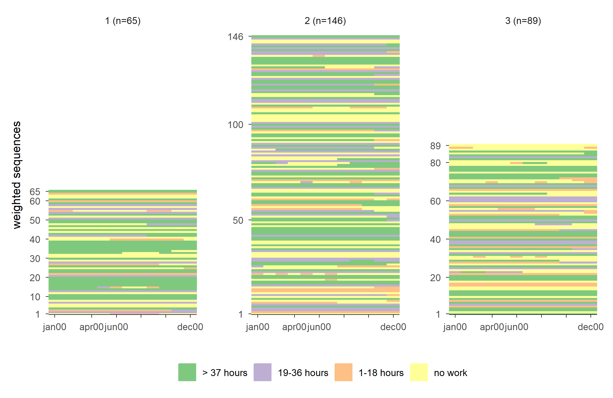
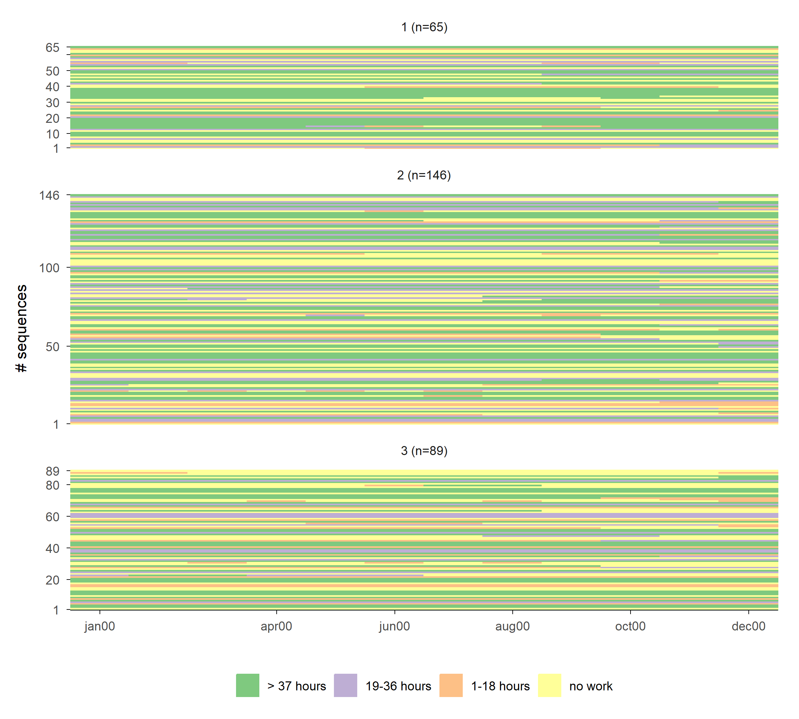
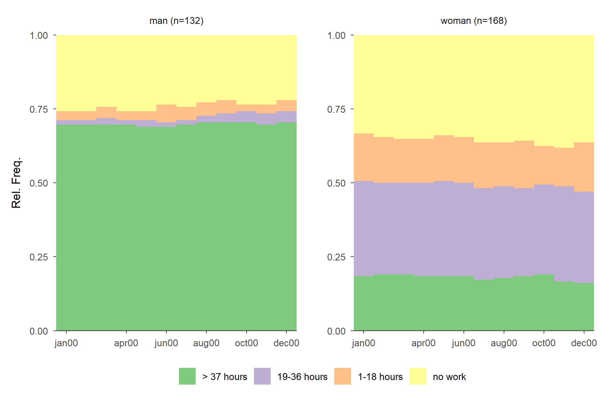
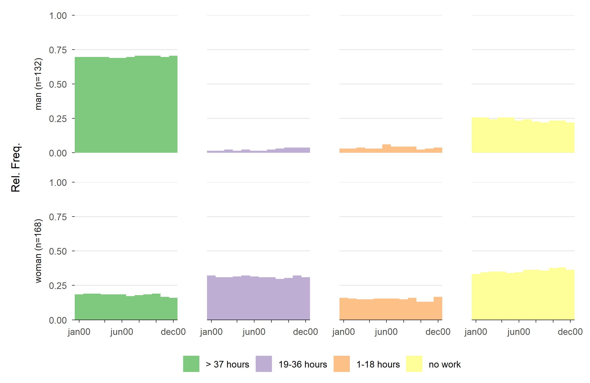
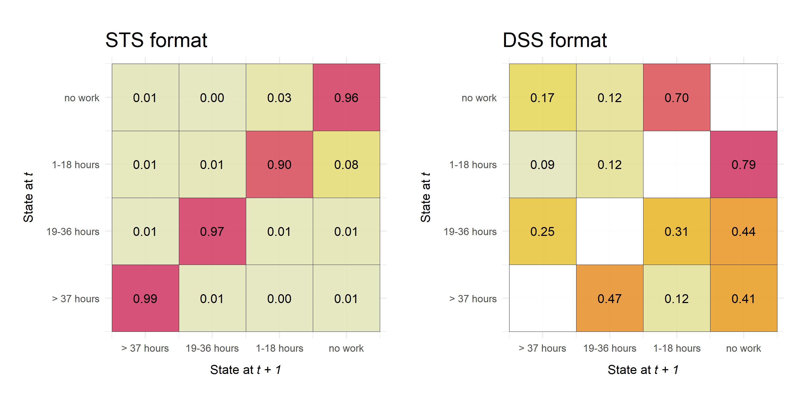

![]()
# required libraries
library(TraMineR)
library(ggseqplot)
library(ggplot2)
library(colorspace)
library(ggh4x)
library(patchwork)
## The well-known example data from the TraMineR documentation
data(actcal)
set.seed(1)
actcal <- actcal[sample(nrow(actcal), 300), ]
actcal.lab <- c("> 37 hours", "19-36 hours", "1-18 hours", "no work")
actcal.seq <- seqdef(actcal, 13:24, labels = actcal.lab)This guest post was first published on the old SAA website in August 2022. It has been re-rendered in October 2026 with {ggseqplot} 1.0.0 and {TraMineR} 2.2.14.
Intro
We all know that visualization plays an important role when conducting a sequence analysis. Accordingly, {TraMineR} and other sequence analysis libraries provide a rich set of plotting functions. Although the default output of these functions often is almost publication-ready, it is usually necessary to adjust some parameters of the plots to obtain the desired results. In the case of TraMineR::seqplot this requires engaging with base R’s plot environment. Today, however, many R users prefer {ggplot2} over base R’s plot library to produce their visualization and aren’t familiar with plot.
In view of that, I wrote the little R library {ggseqplot} that uses {ggplot2} to render sequence plots. The package complements the standard {TraMineR} workflow, assuming that you are defining and analyzing your sequence data using {TraMineR} functions. Only the visualization is outsourced to {ggseqplot}. Accordingly, {ggseqplot} functions are structured in a similar fashion as their {TraMineR} counterparts, often using identical function arguments and also relying on sequence data defined by TraMineR::seqdef as starting point. Under the hood, {ggseqplot} functions are reshaping the data into the format required by {ggplot2} and then call {ggplot2} functions to render the plots.
Apart from a few layout choices, the resulting plots are quite similar to those produced by TraMineR::seqplot. The key difference, however, is that the appearance of those plots can be easily changed by using the + operator and other {ggplot2} functions.
Example set up
Standard index plot
Example 1
# TraMineR
seqIplot(actcal.seq, sortv = "from.end")
# ggseqplot
ggseqiplot(actcal.seq, sortv = "from.end")
More index plots: utilizing ggplot2 capabilities
Example 2
In the following example, we illustrate how the plot’s appearance can be dramatically changed using standard {ggplot2} functions and two functions from the {colorspace} library (scale_fill_discrete_sequential and scale_color_discrete_sequential). We use these functions to change the color palette and the overall orientation of the index plot. Following the example of many of Raffaella Piccarreta’s sequence visualizations, the following index plot maps the time dimension on the y-axis.
ggseqiplot(actcal.seq, sortv = "from.end") +
# Use Built-in Constant (months abbreviations) for axis labels
scale_x_discrete(labels = month.abb) +
# change the color palette (fill and border color)
scale_fill_discrete_sequential("heat") +
scale_color_discrete_sequential("heat") +
# add a title and a axis title
labs(x = "Month", title = "Piccarreta-flavored Index Plot") +
# let the time run "bottom-up" instead of "left-right"
coord_flip() +
# Change the position and size of the title and the legend position
theme(
legend.position = "top",
plot.title = element_text(size = 22),
plot.title.position = "plot"
)
Example 3
The following plots illustrate three options for rendering grouped index plots. The first plot resembles the default output of TraMineR::seqIplot. This type of plot might be misleading if it’s not interpreted carefully because it somewhat hides the group size differences. The same amount of ink is devoted to each of the groups.
The second plot takes care of this, by fixing the y-axis. The group size differences are fully revealed, but there is also a lot of white space.
The third approach is more parsimonious in the sense that there is less empty space in the plot. By using ggh4x::force_panelsizes the height of the index plots is adjusted to their relative group size.
# generate a group vector
set.seed(030583)
grp <- sample(1:3, 300, replace = TRUE, prob = c(.2, .5, .3))
# Variations of grouped index plots
# baseline plot
ggseqiplot(actcal.seq, group = grp)
# internal argument to fix the axis
ggseqiplot(actcal.seq, group = grp, facet_scale = "fixed")
# using ggh4x to get varying plot sizes
# a vector storing the heights of the subplots
rowheight <- table(grp) / 300
ggseqiplot(actcal.seq, group = grp, facet_ncol = 1) +
force_panelsizes(rows = rowheight) +
theme(panel.spacing = unit(1, "lines"))
Additional features
Example 4
Following a suggestion of Claus Wilke, ggseqdplot provides a feature that eases the comparison of state distributions by disaggregating the standard stacked distribution plot.
ggseqdplot(actcal.seq, group = actcal$sex)
ggseqdplot(actcal.seq, group = actcal$sex, dissect = "row")
Example 5
In addition to the sequence plots of TraMineR::seqplot and TraMineRextras::seqplot.rf, I added one additional function for plotting transition rate matrices of sequence states.
By default, the function is visualizing a DSS formatted version of the sequence data. Below, we compare the transition matrices of the same sequence data, first using the STS format and then the DSS format.
p.sts <- ggseqtrplot(actcal.seq, dss = FALSE) +
ggtitle("STS format")
p.dss <- ggseqtrplot(actcal.seq) +
ggtitle("DSS format")
# show side by side using patchwork library
p.sts + p.dss & theme(plot.title = element_text(size = 18))
Further information
Acknowledgment
I like to thank Gilbert Ritschard, Tim Liao, and Emanuela Struffolino for their constructive and encouraging comments on earlier versions of this library.
Notes
- If you find issues, please let me know: https://github.com/maraab23/ggseqplot/issues
Copyright and license
© 2022 Marcel Raab
This post is licensed under a Creative Commons Attribution 4.0 International License (CC BY 4.0).
How to cite
BibTeX citation:
@misc{raab2022,
author = {Raab, Marcel},
title = {Ggseqplot: Ggplotify Sequence Plots},
date = {2022-08-05},
url = {https://sequenceanalysis-association.github.io/blog/posts/2022-08-05-ggseqplot/},
langid = {en}
}
Please cite this post as:
Raab, M. (2022, August 5). ggseqplot: ggplotify sequence plots.
Sequence Analysis Association Blog. https://sequenceanalysis-association.github.io/blog/posts/2022-08-05-ggseqplot/